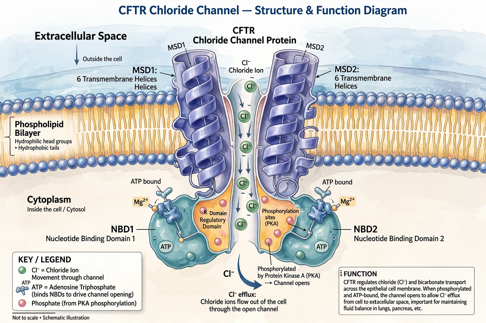

| CFTR | |
| Gene | CFTR, chromosome 7q31.2 |
|---|---|
| Protein type | ABC transporter / chloride channel |
| Length | 1,480 amino acids |
| Function | ATP-gated chloride and bicarbonate channel |
| Associated disease | Cystic fibrosis |
The cystic fibrosis transmembrane conductance regulator (CFTR) is a membrane protein and anion channel in vertebrates, encoded by the CFTR gene on chromosome 7. CFTR transports chloride and bicarbonate ions across epithelial cell membranes, regulating the flow of salt and water in tissues such as the lungs, pancreas, intestines, sweat glands, and reproductive tract. Mutations in the gene cause cystic fibrosis, the most common fatal autosomal recessive disorder among people of European ancestry.
The CFTR gene was identified in 1989 by teams led by Lap-Chee Tsui and John Riordan in Toronto and Francis Collins at the University of Michigan — a landmark in human genetics and one of the first disease genes found by positional cloning. The most common mutation, ΔF508 (deletion of a phenylalanine at position 508), was identified in the same papers.
CFTR belongs to the ATP-binding cassette (ABC) transporter family but is unique among its members in functioning as an ion channel. The protein has two transmembrane domains forming the pore, two nucleotide-binding domains that bind and hydrolyze ATP to gate the channel, and a regulatory (R) domain whose phosphorylation by protein kinase A is required for channel opening. When CFTR opens, chloride ions flow out of the cell, drawing water osmotically and hydrating mucosal surfaces.
More than 2,000 variants of the CFTR gene have been described, grouped into classes by their molecular defect: absent production, defective processing (as in ΔF508, which causes the protein to misfold and be degraded), defective gating, reduced conductance, or insufficient quantity. Loss of CFTR function produces thick, dehydrated mucus that obstructs the airways and pancreatic ducts.
CFTR is the target of modulator drugs: potentiators such as ivacaftor, which improve channel gating, and correctors such as lumacaftor, tezacaftor, and elexacaftor, which improve folding and trafficking of the mutant protein. Combination therapy with these agents has transformed the prognosis of cystic fibrosis since 2019.